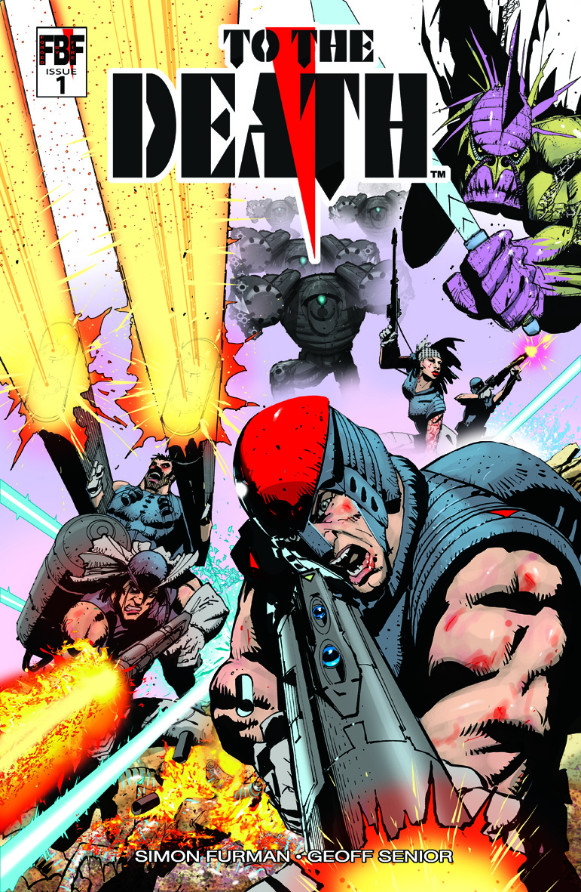

Geoff Senior has been a professional artist and illustrator for over 35 years. Although most notorious for his work on Transformers comic in the 1980s, he has provided artwork for many comic titles including Action Force, Dragon’s Claws and Judge Dredd. Geoff also created the Death’s Head character for Marvel in 1987 with writer Simon Furman.
Since the 1990s Geoff has primarily applied his talents in the advertising world, producing many thousands of storyboard frames, visuals and animations for some award-winning television commercials.
More recently, Geoff has collaborated with longtime cohort, Simon Furman, on the online comic series To the Death which has been critically very well received.
News
2026 Comic conventions I'm guesting at:
TfukCon - Cobden Hotel, Birmingham - 16th May 2026
https://www.primetimetoyz.co.uk/tfukcon
I'll be drawing ink line sketches there (£40 per figure). If you'd like to pre order/pay and pick up at the con then please do so through
'Commissions' link.
Killatoa
KILLATOA- 'on the Origin of Species' 15 part mini strip- The first solo spin-off from @ToTheDeathcomic. Free to read, share and collect at to-the-death.com/killatoa/ & getmycomics.com
To The Death

All 10 issues of 'To The Death' are available from: https://getmycomics.com/ToTheDeath
Simon and I are really happy with the quality of the print. Each issue has 48 action packed colour pages and at just £4.99 is great value!
For those who remember 'Dragon's Claws' it certainly 'ticks the boxes'
Follow Geoff on Instagram
In the gallery
Geoff’s online portfolio of digital work and traditional paintings. It's not all robots!